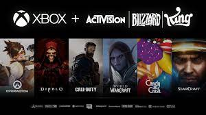

Cameron Patrick 7/8/2023
As of now. We are still waiting on information regarding the recent FTC vs Microsoft trial. FTC is seeking to block Microsoft's acquisition of Activision Blizzard.
An announcement regarding the decision of the case, on which one of the largest and arguably most significant acquisitions we've seen in the gaming industry, could depend, was expected by many obsevers to be released friday, but seems to be on hold until atleast monday 7/10/2023. Microsoft, attempting to show that they're' all in on gaming and its future as an entertainment medium is looking to add one of the biggest publishers, and their impressive variety of intelectual property and studios to their already industry leading catalog of assets. Some within the gaming community are expressing the opinion that the decision may turn out to be a positive one for Microsoft and their flagship Xbox brand, based on expert analysis of the trial and other evidence. In a recent discussion on popular gaming podcast hosted by GameOnDaily GameOnDaily founder "Gaz", Twitter handle @Gazondaily, recalled a recent tweet by Activision Blizzards Twitter account that he thinks may suggest the company is feeling good about the deal as well as pointing out EVP Corporate Affairs and CCO at Activision Blizzard, Lulu Cheng Meservey, Seemed to respond positively to the tweet.
Whether this was just a coincidence, we obviously don't know, but another member of the GameOnDaily podcast began speculating that the decision may already have been made and we are now just waiting for it to be fully drafted and finalized.rizz
— Lulu Cheng Meservey (@lulumeservey) July 8, 2023
Even if the case swings in the tech giants favor they still have other hurdles to contend with as the regulatory body in the United Kingdom CMA, have signaled an unwilligness to approve the deal. Even going as far as to publically respond to the European Commission's approval of the merger in May 2023.
I dare say the video game industry has come a long way in such a short period of time, what was considered by many a niche hobby is now under more attention and scrutiny than ever as some regulatory bodies signal the desire to slow down or stop big acquisitions and mergers. We will be waiting and watching Monday to provide information and analysis on any potential announcements that are made.Our response to the European Commission's announcement today on Microsoft/Activision ⬇
— Competition & Markets Authority (@CMAgovUK) May 15, 2023
[1/5]
